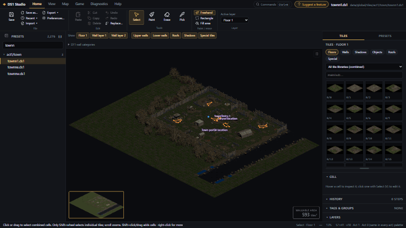
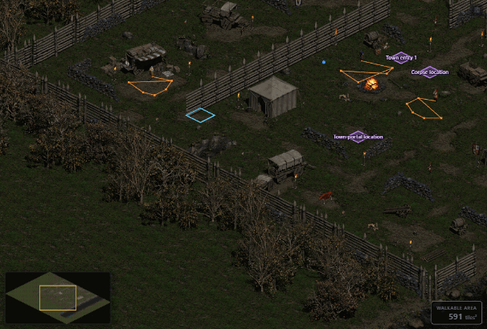
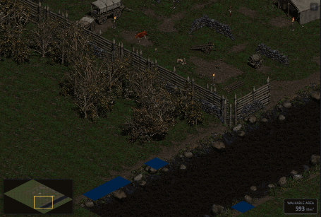
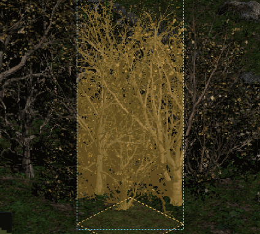
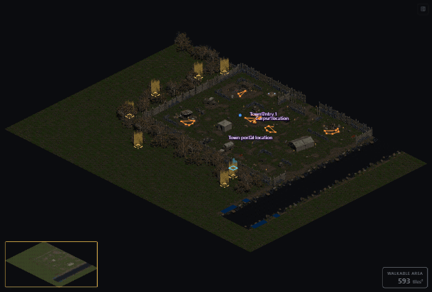
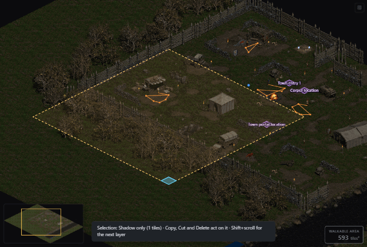
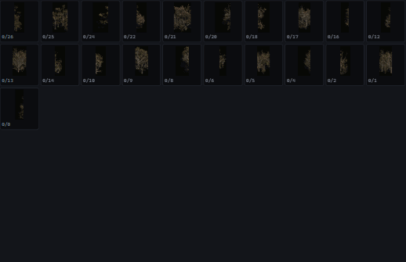
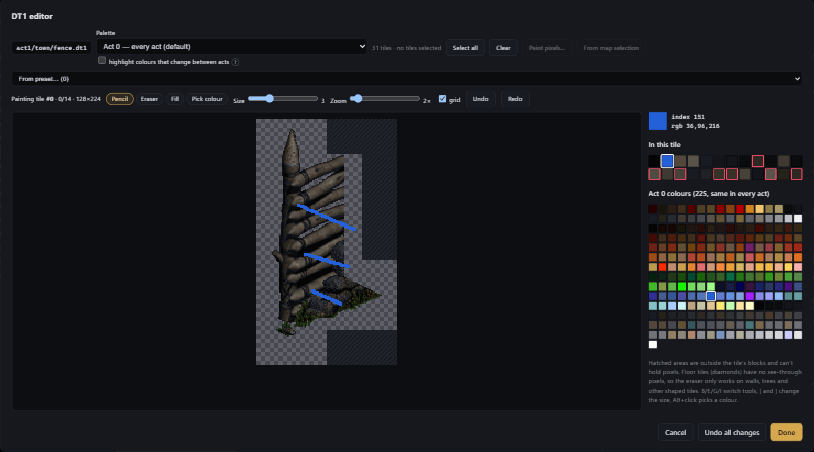
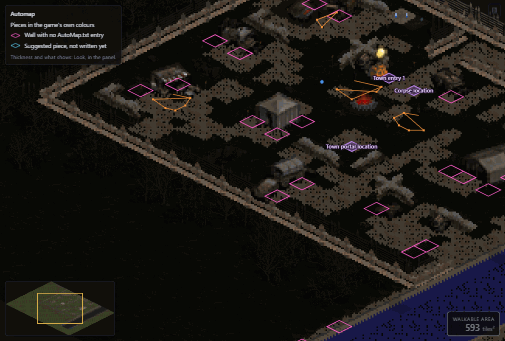

DS1 Studio opens the map presets (DS1 files) of classic Diablo II and your mod straight from the game's files, draws them the way the game does, and lets you edit their tiles, objects, the automap, the level tables and the tile libraries (DT1 files) themselves.
This guide starts with a ten-minute Quick start, then covers every tool. Search at the top finds any feature; click a picture to enlarge it, and press Play on the moving ones.
Windows & LinuxReads the game, writes only your modEvery edit can be undoneUpdates itself
Start here
Quick start
From opening DS1 Studio to a map in game. Tick each step off as you go; your progress stays in this browser.
0 of 6 done
Open a map
Type part of its name in the filter above the file list on the left and click it. F fits the whole map in view. Scroll to zoom; right-drag or the arrow keys move around. More about opening maps

Filter the list, click a map, press F.
Paint
Press B (Paint), click a tile in the Tiles panel on the right, and drag over the map. Ctrl+Z undoes. The Active layer on the Home tab is the layer you paint on. More about painting

Pick a tile (here a fence post) and drag.
Select, copy and move
Press V and drag to select. Ctrl+C copies, and the copy follows the mouse: click to paste. Red cells show what a paste would replace. Double-click a tile to select every copy of it. More about selecting
Place objects and NPCs
Press O, pick one in the gallery on the right, and click the map. Keep clicking to place more; Esc stops. More about objects
Save
Ctrl+S writes the map into your mod folder. The file it replaces is kept as .bak. More about saving
Put it in the game
Game → Add to game writes the rows the game needs (Levels, LvlPrest, LvlTypes). Then Diagnostics → Compatibility checks everything and offers one-click fixes. Connect the level with a warp or a cube recipe so players can reach it. More about Add to game
Set things up the way you like in Home → Preferences… (see Preferences).
Chapter 1
Getting started
1.1Installing
Download the latest version from the Releases page on GitHub.
System
File
Notes
Windows 10/11
…_x64-setup.exe
Recommended. Installs for your user and updates itself.
Windows
…_x64_en-US.msi
For managed installs.
Linux
….AppImage
Runs on most distributions; make it executable and double-click. Updates itself.
Linux
….deb / ….rpm
Debian/Ubuntu and Fedora/openSUSE packages.
Windows protected your PC?The installer isn't code-signed yet. Click More info → Run anyway.
1.2First start: choosing your folders
Diablo II: the folder with d2data.mpq, d2exp.mpq and patch_d2.mpq. It is only ever read.
Mod folder (optional): your mod's folder with its data/ tree. Everything you save goes here. Tick Also read the mod folder's own .mpq files if your mod ships its data in MPQs.
On Linux, point it at the Diablo II folder inside your Wine prefix. Change the folders later with Home → File → Folders…
1.3A tour of the window
The main window with Act 1's Rogue Encampment open.
Tabs: Home (files and editing), View (how the map is shown, and the view modes), Map (the map and its tile libraries), Game (tables and cube recipes), Diagnostics (checks and crash logs) and Help switch the ribbon below.
Ribbon: commands in labelled groups. Hover any button for what it does and its shortcut.
File list (left): every DS1 in the game and your mod. Type in the box to filter. The button left of its title folds it away for more room.
Map view: the map as the game draws it, with the minimap in the corner and the walkable area box.
Side panels (right): Tiles/Presets, Selection, Cell, History, Layers, Map. A view mode (Walkability, Automap, Level light, Roof hiding) swaps them for its own panel.
Status bar: data sources, tool and layer, the cell under the mouse, zoom, size, act and palette.
The Home ribbon: File, Edit, Tools, Paint / erase and Layer.
1.4Opening a map
Type part of the path in the box above the file list, e.g. act1/town or arcane.
Click a map. It opens with the tile libraries the game would use for it (LvlPrest → Levels → LvlTypes).
Save (Ctrl+S) writes the map into your mod folder at the same path it has in the game. A replaced file is kept as <name>.bak the first time, so the true original survives. Save as… saves under a new path. Your Diablo II install is never written to. Everything else DS1 Studio writes (DT1s, tables, presets) goes into the mod folder with the same safety.
Opening another map saves the one you're leaving first; turn that off in Preferences to be asked instead. Esc with nothing selected asks to close the map.
Esc with nothing selected: Save and close, Discard and close, or Cancel.
1.6Preferences
Home → Preferences… holds your settings, remembered on this computer. Reset all puts every one back.
Maps and saving
Save automatically before opening another map (on by default).
Autosave unsaved work every N seconds for crash recovery (20 by default; 0 = off).
How many recent maps to remember.
Run the Compatibility check after saving, and/or after Add to game. It opens only when it finds problems.
Colours
Show maps in the Act 0 colours (on): the colours that look the same in every act, with the others as they look in the map's own act. Nothing turns magenta.
Mark colours that change between acts in magenta (off): turn on to find tiles that still need Make act-safe.
Editing
Paste onto existing tiles (stack) by default; Alt then replaces instead.
Ask before deleting several objects at once, or a preset.
What a map opens with
Walkable area box (also View → Walkable area), grid, minimap, and object names on the map.
Mouse and keyboard
Mouse-wheel zoom speed and arrow-key scrolling speed.
Shift+wheel steps through layers (Alt+wheel zooms), or zooms (Alt+wheel steps through layers).
New map starts with
Size, act, floor and wall layers, and the folder under data/global/tiles/.
Home → Preferences…
1.7Autosave, recent maps and updates
While a map has unsaved changes, a copy is kept in the app's own storage (never your folders). After a crash, the start page lists Unsaved work, and opening that map offers Restore or Discard.
Home → File → Recent ▾ lists the maps you opened last. Tick Reopen the last map on start to open it automatically.
The app checks GitHub once a day for a new version. Help → Check for updates shows what changed, installs it and restarts.
Chapter 2
Viewing maps
2.1Moving around
To
Do this
Zoom
Mouse wheel (around the mouse)
Pan
Arrow keys (Shift = faster), Space+drag, or middle/right drag
Fit the map
F
Jump anywhere
Click or drag on the minimap (K toggles it)

Arrow keys pan smoothly at any zoom. Their speed is in Preferences.
2.2Layers
A map has up to 2 floor layers, 4 wall layers (walls, roofs, lower walls, special tiles, trees and objects that are tiles), shadows, and sometimes a tag layer. The Layers panel shows or hides each one. Number keys toggle them: 1/2 floors, 3–6 walls, 7 shadows, 8 roofs, 9 lower walls, 0 special tiles. Hiding only affects the view.
The Layers panel with how many cells each layer uses.
2.3View modes and overlays
The View tab's Mode group switches what the right-hand panel is for, one mode at a time: Tiles, Walkability (W), Automap (A), Level light (Shift+L) and Roof hiding (H). Tab steps through them. Overlays in the Show group (grid, rooms, minimap, sprites, markers, As if inside) work in any mode. Switching view clears the selection.
The View ribbon: Navigate, Mode, Show, Colours and Picture.
Walkability (W): amber blocks walking, red blocks jumping and teleporting too.Rooms 8×8 (R) and Grid (G).
Level light draws the map as brightly and in the colour the game lights the level (Levels.txt Intensity and Red/Green/Blue). Its panel changes them with a slider or a number, shows the Levels.txt values underneath, previews every change, and Apply saves them.
Level light on the Worldstone Chamber (Intensity 40).
Walkable area. The box at the bottom right counts the tiles² a player can stand on, updated as you edit. Its colour tells you roughly how big the level feels:
Try the walkable area colours
Walkable area3,600 tiles²
2.4Game view, sprites and special tiles
Game view (Z) zooms to exactly what the character sees in game (640×480, 800×600, PD2's widescreen sizes or custom) and shades the rest.
Game view: the 800×600 screen around the selection.
Objects and NPCs are drawn with their real, animated sprites. N toggles sprites, M object markers, P NPC paths.
Special tiles are invisible in game: warps, where players arrive, the corpse and town-portal spots. DS1 Studio labels each one (e.g. Town entry 1, Warp · link 1 → Catacombs Level 1). Right-click a cell → Place a special tile here to add one.
Where map portals arriveA player who comes in through a map item's portal lands at a waypoint if the level has one, else in a room with a warp tile, else in the room at the centre of the level. If that room has no floor, the game stops. Place a waypoint where players should arrive; the Compatibility check asks for one.
2.5Roof and wall hiding
When a player walks into a building, the game fades its roof. A hide area is two special tiles at opposite corners of the inside; every wall-layer tile with the named main index in the area (plus one cell around it) fades while the player stands inside. LvlPrest's Pops must count the areas and PopPad grows or shrinks the trigger (the game's houses use −4).
View → Roof hiding (H) shows the areas; As if inside (Shift+H) hides their tiles.
Map → Roof hiding…: select the inside of a building, tick what should fade (roofs are ticked for you), and click Add hide area. DS1 Studio places the markers and sets Pops/PopPad.
Map → Wall hiding… is the same with the walls ticked: the walls in front of a room fade so they don't block the view.
Map → Wall hiding… with the walls ticked.
2.6Overlapping tiles
When tiles overlap under the mouse (trees over trees, a wall over a floor), hold Shift and turn the wheel to step through them. Only that tile's layer is selected, so Copy, Cut and Delete leave the others alone. Esc selects all layers again.

Shift+wheel through stacked tiles; the chosen one is outlined.
Chapter 3
Editing tiles
3.1The tools
Tool
Key
What it does
Select
V
Click a cell to edit it in the Cell panel; drag to select; Shift adds to the selection.
Paint
B
Paints the chosen tile on the active layer.
Erase
E
Clears cells on the active layer.
Pick
I
Click a tile on the map to paint with it.
Objects
O
Select, move, add and delete objects and NPCs.
The Active layer list chooses which layer Paint, Erase, Fill and Clear work on. Floors take floor tiles; wall layers take walls, roofs, lower walls, trees, objects and special tiles.
3.2The Tiles panel
Pinned and recent tiles on top; a brush plus two mixed tiles (dashed).
Click a tile to paint with it. Ctrl+click more tiles to paint a random mix.
Right-click a tile to pin it (★). Recent lists what you used last.
The drop-down shows one DT1 at a time; chips filter walls, objects, roofs, lower walls and special tiles; the box finds a tile by main/sub number.
Rest the pointer on a tile for an enlarged view with its variants and source DT1.
3.3Painting: freehand, rectangle, fill
Mode
Key
How
Freehand
B
Paints the cells the mouse passes over.
Rectangle
U
Drag a rectangle; all of it is painted when you let go.
Fill area
L
Fills the connected area of the same tile (inside the selection, if you click in one).
Which layer a tile goes on: with a tile ready to paint, Shift+scroll moves it to the next or previous layer of its kind. The preview shows it in front of or behind the tile already at that spot.
A rectangle of floor painted with a random mix of two tiles.
3.4Selecting, copying and moving
With Select (V), drag to select or press Ctrl+A for the whole map. Shift+click and Shift+drag add to the selection, for any shape; Shift+click a selected cell to take it out. Undo keeps the selection. The Selection panel offers Fill, Clear, Clear everything, Copy, Cut, Re-roll and Find & replace.
A selection with the Selection panel on the right.
Copy (Ctrl+C) and Cut (Ctrl+X) take what you see; hidden layers stay put. The copy then follows the mouse: click to paste, Ctrl+V to paste again later. Objects in the selection come along, so Cut then Paste moves an area with everything in it.

Double-click a tile to select every copy of it on its layer.

Shift+scroll narrows a selection to one layer at a time.
One layer of a selection: select 10×10 cells, Shift+scroll to Wall 1, and Delete removes only the Wall 1 tiles. Esc goes back to all layers.
Before you click, red cells show the tiles a paste would replace.
Hold Alt when you click to stack the paste onto what's there (the next free layer) instead of replacing. Pasting into a map that lacks the copied tiles' DT1s offers to add them, and asks for a new name if one clashes with a DT1 the map already loads.
3.5Find & replace, re-roll, undo
Find & replace (Ctrl+H) swaps every use of one tile for another, on one layer or all of its kind, in the map or the selection. Re-roll mixes up the tiles inside a selection with other variants already used there.
Find & replace tiles.History: click any step to go back or forward to it.
Ctrl+Z and Ctrl+Y undo and redo without limit.
3.6The Cell panel and walkability
Click a single cell with Select to edit every layer in it: kind, main and sub index, hidden, raw bytes and tag, each with a ? explaining it.
The Cell panel.Painting a tile's sub-tile flags.
Walkability for this map only: in View → Walkability (W), paint blocked or walkable sub-tiles straight onto the map. DS1 Studio adds a small <map>_walk.dt1 for it, so no other map changes.
For a tile everywhere: paint its flags under the card in the Cell panel and Save DT1s to mod. Every map using that tile changes.
3.7New maps and resizing
Map → New map creates an empty map (defaults in Preferences). Level type chooses where its tiles come from:
(New Lvltype): starts empty; you pick tile libraries from any act, and Add to game gives it a level type of its own.
(Choose Existing): starts with an existing level type's tile libraries, and Add to game starts from a level of that type.
New map, starting from an existing level type.Map → Resize: drag the edges.
Saving a resized level also updates its SizeX/SizeY in Levels.txt; the game stops building a level whose map isn't its size.
Chapter 4
Objects and NPCs
Object mode (O): preview, “In this map” and the gallery.
4.1Placing and editing
Switch to Objects (O, or Shift+O from a tile tool).
Filter by NPCs or Objects, or type a name.
Click one, then click the map to place it. Esc stops.
Drag an object to move it; Delete removes it. Ctrl+C puts a copy on the cursor (green), Ctrl+X cuts it (red). The Object panel edits type, id, position, flags and an NPC's path.
Double-click a torch: every torch on the map is selected, ready to delete, copy or cut.
4.2“In this map”
Lists everything placed, grouped by name with a count. Type to search; click a name to centre on it, again for the next one.
Every object and NPC placed, with counts.
Chapter 5
Presets
A preset is a reusable piece of map: a building, a wall run, a group of trees. Presets are saved in your mod folder, so they travel with the mod.
5.1Saving and placing
Save selection (Presets panel, Map → Presets, or Save as preset… after a copy) asks for a name and a category (one of yours, or New category…) and lets you choose what to keep: floors, walls, roofs, shadows, markers, objects.
Suggest finds structures that recur across maps that share this map's tiles.
Click a preset, then click the map to place it. Red cells show what it would replace; Alt stacks it. Rest the pointer on a preset to see it enlarged.
Right-click a saved preset to place, rename, move to another category, duplicate, export or delete it.
Share presets:Export all…, Export on a category heading, or Export… on one preset saves a .zip with the tile libraries from your mod they use. Import… adds presets from such a file (or a single .json), showing what it adds first; a different tile library with the same name is kept and the imported one renamed.
Save as preset with the category list.Right-click a saved preset.
5.2The Preset builder
Build a preset on a 20×20 grid from this map's tile libraries, or add any DT1. Tiles from a library that isn't in the Act 0 colours yet are copied in converted to Act 0, so the preset looks right in any act.
The Preset builder.
Chapter 6
Warps: connecting maps
Each map preset is its own level, and levels are joined by warps. A warp special tile with main index N (0–7) uses its level's link N: Levels.txt VisN is the level it leads to and WarpN the kind of warp.
6.1Seeing and changing where a warp leads
Warp markers read e.g. Warp · link 1 → Catacombs Level 1, or (not set).
Select the warp and click Change where it leads…, pick the level and the kind of warp, and tick also add the way back if you want one.
Apply writes Levels.txt in your mod.
A warp and where it leads.Choosing the level a link leads to.
Add to game firstA map must be tied to a level before its warps lead anywhere. If your mod ships compiled .bin tables, rebuild them afterwards.
Chapter 7
Importing DS1 and DT1 files
7.1Import a map
Home → File → Import ▾ → Map… and pick the .ds1 (or a map package .zip).
Name it; it's saved as expansion/Map/<name>.ds1.
Each tile library the map names shows as ✓ found, ＋ provided by a file you picked, or ✗ missing. Add the missing DT1 files or folders.
Import, then Add to game opens pre-filled with a level that uses the same tiles.
Two libraries provided, one still missing.
Maps from someone not using DS1 StudioA map usually comes as the DS1, the DT1s the maker changed, and rows of their AutoMap.txt. Use Import → AutoMap rows… to bring those rows in under your level type, and run the Compatibility check: it tells you when their DT1s differ from yours.
7.2The DT1 library
Map → DT1 library… lists every DT1 the game and your mod have. Browse any of them, bring in your own (+ Add DT1 files…), add whole libraries to the map, or Build a custom DT1 from single tiles of any others. Libraries are converted to the Act 0 colours as they come in, unless you untick it.
DT1s ready to import.
A custom DT1 copies each tile exactly (pixels, walkability, sound), keeps whole pieces together, gives clashing tile numbers new ones, and copies each tile's automap pieces. Keep its name short: the whole path must fit the game's 41-character limit.
Chapter 8
Tile libraries and the DT1 editor
8.1Tile libraries
Map → Tile libraries reviews the DT1s the map uses: how many of each library's tiles the map places, and which tiles. Show one on the map, remove a tile from a DT1, Rename… a DT1 (level types are updated), or take a library off the map.
Map → Tile libraries.
8.2The DT1 editor
Map → DT1 editor edits a copy of any DT1: recolour tiles, paint pixels, and change tile settings. Save writes a copy under a new name or overwrites your mod's file, and can switch the map to it.
The DT1 editor.

Recolour: hue, saturation, brightness, tint, replace a colour.

Double-click a tile to paint it pixel by pixel.
The Tile settings tab edits everything a DT1 Tools .ini holds (kind, index, rarity, sound, roof height…) for one tile or many, and exchanges .ini files with DT1 Tools.
8.3Act 0 and Make act-safe
About 30 of the palette's colours change between acts, so tiles drawn for one act can show red or purple patches in another. Map → Make act-safe lists each DT1 the map uses with a before/after preview; choose the act it was drawn for and Convert. Converted DT1s are saved into your mod with .bak copies.
Random red cells?If only some cells show odd colours in a random scatter, the map probably loads two copies of the same tiles (an original and an act-safe copy). Make act-safe and the Compatibility check both find this and remove the extra copy.
Chapter 9
Game data
9.1Data tables
Browse and edit any .txt table in a spreadsheet view; every column header has a ? explaining it. The LvlPrest, LvlTypes, Levels, Objects, MonPreset and CubeMain shortcuts jump to the open map's row.
Game → Data tables.
9.2Add to game
Makes the game load the open map. The dialog lists every field it will write, old and new value and why, before you click Apply.
A new level with settings copied from a level you choose. Level type: a new one of its own, or the one it copies from.
Replace the map of an existing preset level.
Game → Add to game.The rules it follows (and why)
Rule
Why
New rows go at the end
The game reads Levels, LvlPrest and LvlTypes by row position; a row in the middle shifts every level after it.
New levels are Act 5
The game takes the act from the level number (109 and up is Act 5).
Layer stays ≤ 100
A higher automap Layer crashes the game when a player enters.
SizeX/SizeY = map size − 1
As in every preset level; the preset then fills the level.
A free Offset spot
Levels of one act share a world and must not overlap.
Paths ≤ 41 characters
The game copies tile paths into a 60-byte buffer after DATA\GLOBAL\TILES\.
Check a tile path's length
data/global/tiles/
9.3Changing a level’s level type
Game → Level type… gives the map’s level another level type (Levels.txt LevelType): the LvlTypes row listing the tile libraries it can load, and whose automap pieces it draws. Every change is listed before anything is written; afterwards the map reopens and the Compatibility check runs.
The new type lists every tile library the map uses, and the map’s Dt1Mask points at exactly those slots.
A type other levels use keeps its tile list: if it lacks some of the map’s libraries, the level gets a copy of its own.
A preset row with several maps (like the town’s variants) keeps every library it loads, so the other maps keep their tiles.
Automap pieces are carried over (under the type’s number in mods like PD2).
Only preset levels (built from one map) can change type; the game builds maze and outdoor levels by type number.
Changing the Rogue Encampment to the Barracks type: other levels use Barracks, so the level gets a copy of its own, and every change is listed before Apply.
9.4Cube recipe
Game → Cube recipe creates a new item and a Horadric Cube recipe for it, with icons for the template and ingredients. It adds the item at the end of Misc.txt, refuses duplicate recipes, and keeps the item out of random drops. Pick one of your mod's map items as the template and the new item opens the map you have open.
Game → Cube recipe.
9.5Compatibility check
Diagnostics → Compatibility checks the map will load and play in game: missing tiles and DT1s, table wiring, entry markers, a missing waypoint, NPCs on unwalkable ground, walls missing from the automap, and more. Most results have one-click fixes, and Show on map marks the cells.
The Compatibility check.
Intended warnings: Accept as intended takes a warning out of the check for this map; Accepted (N) lists them with their text and fixes, and Un-accept puts one back.
Tile libraries loaded twice: Compare the copies and choose… shows the same tiles from both copies side by side, to keep the right one.
Tile paths too long: Rename… shortens every such path together and updates LvlTypes and LvlPrest.
AutoMap rows with no picture (Cel1 −1) stop the game while it loads; one click removes them, with a backup.
Colours: libraries not drawn for the level's act can be converted to Act 0.
Ways out: a level with no working warp and no waypoint can only be left by town portal; Add an exit warp… sets one up.
9.6The automap
View → Automap (A) shows the in-game automap over the map. Walls outlined in pink have no AutoMap.txt entry (a hole). Click a cell to see each tile's piece: Change piece… or Clear piece, for Only this cell by default. Where a tree or roof stands in a wall's place, choose a wall piece… draws one anyway.

The automap on and off.Suggested pieces previewed in cyan.
The Automap editor sorts tiles into walls, floors, water, roofs, objects and shadows; pick a category to see and set its pieces, Suggest fills holes from look-alike tiles, and nothing is written until Save to AutoMap.txt.
The Automap editor.
Chapter 10
Sharing and exporting
10.1Map packages
Export ▾ → Map package… puts the DS1, its DT1s, modded sprites and every table row the map needs into one .zip. Import ▾ → Map… merges such a zip into another mod safely: clashing ids get new numbers, and nothing is added twice. Each package also has a for-developers folder with the rows ready to paste by hand.
Export ▾ → Map package.
10.2Pictures
View → Export picture saves the whole map or the selection as a PNG at 100%, 50%, 25% or 12.5%. Copy view (or Print Screen) copies the map pane as it is on screen, to paste anywhere.
Reference
Keyboard shortcuts
Default keys; change any of them in Help → Shortcuts. Filter the list, or click the box and press a key to see what it does.
Action
Keys
Select tool
V
Paint (freehand)
B
Paint / erase a rectangle
U
Fill a connected area
L
Erase tool
E
Pick tool
I
Objects tool
O
Switch tiles / objects editing
Shift+O
Save
Ctrl+S
Undo / redo
Ctrl+Z / Ctrl+Y
Copy / cut / paste
Ctrl+C / X / V
Select all
Ctrl+A
Cancel, drop what's on the cursor, deselect; with nothing selected, close the map
Esc
Delete (active layer / object)
Delete
Delete everything in the selection
Shift+Delete
Find & replace tiles
Ctrl+H
Commands
Ctrl+K
Next / previous view
Tab / Shift+Tab
Fit the map
F
Game view
Z
Grid
G
Rooms (8×8)
R
Walkability
W
Automap
A
Level light
Shift+L
Object markers / sprites / NPC paths
M / N / P
Minimap
K
Roof hiding / As if inside
H / Shift+H
Floor 1 / Floor 2
1 / 2
Wall 1 – Wall 4
3 – 6
Shadows / roofs / lower walls
7 / 8 / 9
Special tiles
0
Pan the map
Arrow keys (Shift = faster), Space+drag, middle or right drag
Zoom
Mouse wheel
Step through stacked tiles / a selection's layers
Shift+wheel
Select every copy of a tile or object
Double-click
Stack a paste or preset onto existing tiles
Alt+click
Add a tile to the random paint mix
Ctrl+click it in the Tiles panel
Pin a tile / preset menu
Right-click it
Reference
Safety and troubleshooting
Keep a backupDS1 Studio is in beta. Back up your mod before editing.
What DS1 Studio writes
Only into your mod folder: maps, DT1s, tables, presets. The Diablo II install is only ever read.
A file it replaces is kept as <name>.bak the first time.
Autosaved copies live in the app's own storage.
After changing tables, start the game once with -direct -txt if your mod ships .bin files, so they're rebuilt.
When the game crashes
Diablo II writes each crash to D2<date>.txt in its folder. Diagnostics → Crash log reads the newest ones and says in plain words what they mean and what to do. When a map can cause the crash, Run compatibility check finds and fixes it.
Common questions
Tiles show as red “missing” diamonds.
The map uses tiles no loaded DT1 provides. Run the Compatibility check (it offers to add the DT1s that contain them) or add them in Tile libraries.
My new map doesn't appear in game.
Use Add to game, connect it with a warp or a cube recipe, and rebuild the .bin tables.
A warp leads nowhere.
Its link isn't set in Levels.txt: select it and use Connect it to a level…
Tiles look different in another act.
Convert them with Map → Make act-safe so they use the Act 0 colours.
The game crashes the moment I enter my level.
Check the Crash log. Common causes the Compatibility check fixes: a Levels.txt Layer above 100, an empty level centre with no waypoint for portal arrivals, or a tile path longer than 41 characters.
Windows blocks the installer.
More info → Run anyway.
Reference
Glossary
DS1
A map preset: a grid of cells with floor, wall, shadow and tag layers, plus objects and NPCs. The game builds levels from them.
DT1
A tile library: the pictures and settings of the tiles DS1 cells refer to.
Cell
One diamond of the map grid; each layer holds at most one tile in it.
Main / sub index
A tile's number. A cell asks for kind + main + sub, and the game draws the DT1 tile with those numbers.
Orientation
What a tile is: floor, left/right wall, corner, door, pillar/tree, roof, shadow, lower wall, special tile.
Variant
Several tiles can share a number; the game picks one at random, weighted by rarity.
Sub-tile flags
A tile's 5×5 walkability grid: block walk, sight, missiles, teleport.
Special tile
An invisible marker: warps, entries, corpse and portal spots.
Level
A row of Levels.txt: one area of the game, built from DS1 presets or at random.
LvlPrest.txt
Lists the DS1 files, the level each belongs to, and its Dt1Mask.
LvlTypes.txt
Level types: up to 32 DT1 File slots each.
Dt1Mask
Which of its level type's DT1 slots a DS1 loads, one bit per slot.
Warp / link
How levels connect: Levels.txt Vis0–7 (target level) and Warp0–7 (kind of warp).
Preset
In DS1 Studio, a saved piece of map you can place again. Not the same as a DS1 “map preset”.
Act 0 palette
The colours that look the same in every act.
Mod folder
Your mod's folder; everything DS1 Studio saves goes here.
Nothing in the guide matches that. Try a shorter word, or a menu name such as Add to game.